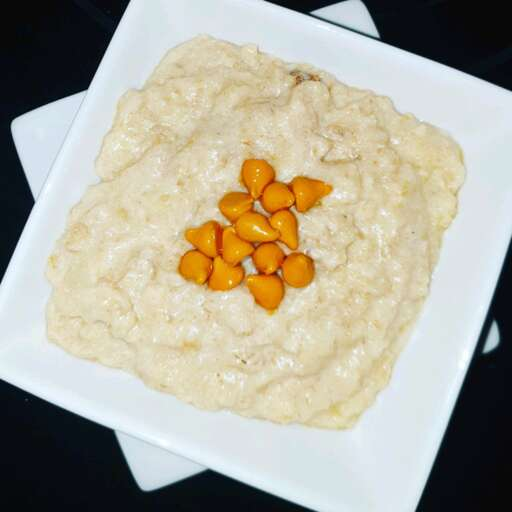

Butterscotch Oatmeal

Description
This recipe is for making Butterscotch Oatmeal. This meal is perfect for a quick, delicious breakfast. This simple recipe only takes about 15 minutes to make and only requires simple ingreadients.
Ingredients
- 1 egg, beaten
- 1 and 3/4 cups milk
- 1/2 cup packed brown sugar
- 1 cup rolled oats
- 2 tablespoons butter
Steps
- In a saucepan over medium heat, whisk together the egg, milk, and brown sugar. Mix until combined.
- Mix in the oats.
- Whn the oatmeal begins to boil, cook and stir until thick.
- Remove from heat, and stir in butter until melted.
- Enjoy!